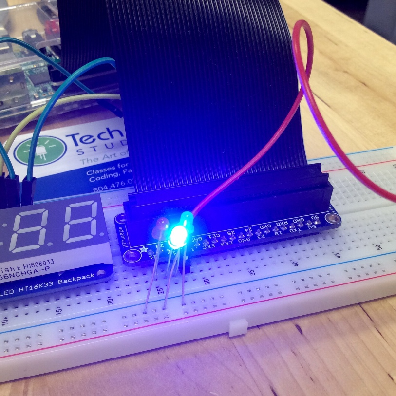

Code Em Fall 2016
Josef Seiler, 2016-12-09, Classes
Josef Seiler, 2016-12-09, Classes
9/13/2016
Code Em started with icebreaker introductions. Tell the class three truths and a false statement about yourself, including the instructors! Everyone was asked to share their experience with computer science and programming.
To assess varying levels in computer science, we started a discussion on what everyone's goals might be for the class. Since this class will take a project-based approach, the students will learn to merge all of these goals into one project, or projects -from all of the class-shared objectives and set Code Em curriculum objectives, students will learn how to create an "objective tree" by using several objectives. Think of each objective, or goal as a separate piece that relates to the rest, to fit together making a large puzzle. Some of the student's objectives included, learning how to code in Python and HTML, learning to code better, be able to create a series in Scratch, code to draw a character, make different electronics and design games. By using an objective tree, as a class we can break each goal down into smaller definable characteristics. We will start to interconnect each objective (goal) from these characteristics. This objective tree method is a great method to learn; throughout the Code Em classes we will be using other methods like it to break down complex things into simpler, more understandable parts -really getting into talking about Abstraction.
Name that hardware!
When the Code Em students walked into Tech Em, they noticed two tables at the front of the studio with a slew of mismatched computer hardware. How could they not notice! Each piece of hardware was labeled with a different number. Students were tasked to write down what they thought each hardware is named and what year they thought it was invented or built. When they were finished, we went over each device's identity and when it was invented. Many of the device's real identities and age came to a complete surprise to everyone. For example, what students thought was just a keyboard, was actually a whole computer, the TRS-80 (or "trash-80", despite the nickname, it is completely respectable)! Many were surprised about the Raspberry Pi, a whole computer.

This exercise was an excellent intro to the advancement of computer hardware. The hardware devices from the quiz were from several different decades. A vacuum tube representing the 1940's, and the Raspberry Pi (first generation from 2012).
To gain a further appreciation for the advancements in computing, learned that a computer does not have to be powered with electricity or by a battery. Even their parent's car is considered a computer. Examples of early computers started with Tally Sticks, at a time when history was not recorded. These were tools (mechanical devices) to aid in counting. Other examples included were the Abacus (~2700 BC to present).
So, what is hardware? What is software? What is a computer program?
As a class, we went over what each of these mean. Hardware is the physical stuff, like the keyboard, monitor, mouse, circuit boards, chips, wires, etc.
Software is what's 'inside' the computer, all of the programs, or applications, like a word processor or game.
A computer program is step-by-step instructions written to tell the computer exactly what to do.
The class was able to see a snippet of computer hardware progression in-person at the front of Tech Em from the interactive quiz.
We will be using a messaging app called Slack. Tech Em has been using this for some time. We have created a separate Slack 'team', to have all the students from each of the classes join. This provides the opportunity for students to reach out after the class with questions on any of the concepts we learned, discussing projects, or troubleshooting code while at home. While students are using Slack, they will have the opportunity to access feedback from the rest of the Tech Em Studios team!
We briefly went over this in class. We are going to be using GitHub as a way to compile and organize everyone's coding projects they have been working on. This site can 'host' their repositories, so it will all be in one place. Once we start typing up code, we will teach them how to upload their projects onto a private repository. Having all of their projects in one place will help with putting together a portfolio from the class if you and your child choose to do so. Students can upload other software projects they work on outside of class (and after this class) onto this site. There are millions of open source projects on GitHub that your child has access to once they create an account!
For those students that have an email address, please accept the Slack invitation if you have not already done so. For those that do not have an email, parents, you have the option of either creating an email with your child through Gmail or another domain, or we can send an invitation to your email. After accepting the invitation, your child can create their own credentials for the Slack sign-in.
During the time in between next class, students can create a GitHub account to start getting used to it. As a class we will go through how we will upload our projects.
We are planning on having every student earn an official Tech Em Studios certificate by the end of the session! We will most likely have an 'assessment' towards the end to make sure each student has understood the fundamental concepts of what we'll teach throughout this Fall towards the end of the session.
Move Forward as a Team
What computers can do
Computers Being Universal Machines
Programming Languages
What is Coding
Class Project
9/20/2016
We started with a review of what we went over last week: Objective discussions (what our learning interests are and project ideas), using Slack, GitHub, the Interactive Quiz on hardware devices. We continued our conversation on computer hardware history starting with where we left off, what makes a computer, a computer. Our initial definition of a computer (early computers) is a tool used for helping to solve problems, it does not require electricity (or a battery). A great example to start off with, which helps to gain appreciation for how far computer hardware has come is something that was invented before history was written, Tally Sticks (generally made up of wood). This was a device to help early users solve math problems. After counting crops, or anything to be counted, humans quickly realized they would exceed the limit of their initial counting method, their ten fingers. So to help keep track of high counts of things, we created these tally sticks. These tally sticks operate quite identically as do tally marks.
We observed the advancements of early computers through the centuries with the Abacus (~2700BC), Pascal's calculator (1642's -1800s), Arithometer (1820), and the Babbage Machine (1823). Then onto the first computer programmer, Ada Lovelace.
We jumped to learning about the importance of the main components of computer hardware, starting with the vacuum tube. We categorized the advancements engineers had made in computer hardware into 'generations'. This Vacuum tube signaled the 1st Generation. About 17,000 of these 'switching devices' were the main component of the first commercial computers like the ENIAC, in the 1940s. However, these required a great deal of electricity and would burn out easily. Not to mention, the ENIAC's size demanded a very large room.
The replacement for the vacuum tube was the transistor, considered to be the building blocks of computers. The advent of the transistor rang in the 2nd Generation, electric computers. These devices were a great deal more efficient than its predecessor. When you combine transistors, logic gates are formed, to make integrated circuits. When I say 'switch', I mean there are only to possible input values and output values, ON and OFF (or 0 and 1). This "internal switching logic" is how computer hardware carries out instructions provided in the software. Inside all modern devices are lots of switches. These switching devices are very much like the billions of neurons in our brains.
These integrated circuits were miniaturized to form microchips. Microchips comprised the main component of hardware, that brought in the 3rd Generation, microcomputers. These allowed for more 0's and 1's, thus allowing more data to be computed and stored (computers store data using 0's and 1's).
We explored a few different types of logic gates, the AND gate, OR gate, and the NOT gate. Each gate accepts one or more input values and produces a single output value. Remember, these values are either zero or one (can't be both!). We learned how each of these gates operate and how you can represent these logic gates, their logic diagram symbol and associated truth tables. We learned that we can combine these logic gates, to have more inputs and outputs of 0's and 1's.
Next week, we'll learn the awesome steps a computer takes to fire up a program: Fetch, Decode, Execute! -and how this is relative to how we humans operate. We'll also take our first look at programming languages, starting with Python.
Draw a logic diagram symbol for each gate we learned about (AND, OR, NOT). Show the logic for each switching device by creating a truth table for each.
BONUS Try combining a few of these logic gates to make a simple circuit -we started this in class.
Remember to check your email for an invitation to Slack! For an explanation of this app, look to the end of Day 1 section of this blog.
9/27/2016
The third class was kicked off with a review of logic gates and a little more on the language computers "speak", binary (0's and 1's).
To get every student involved, we acted out input and output devices of a typical modern computer (I/O devices). First we simulated the process of a user interacting with the mouse to perform tasks.
Then we added more devices to portray the workings that take place when a simple program is run on the computer. In this case, we acted out a calculator program. Along with the mouse and user, we added these devices:
Calculator program (software)
Processor
Keyboard
Monitor (the whiteboard)
Bus (a set of wires that is used by the processor to access memory and I/O devices)

Or Central Processing Unit. To understand some basics of computer hardware, we examined a functional view of a computer. We related this view to how we humans operate on a basic level. -We will learn more on how processes of the computer and the processes of human actions correlate throughout the session.
Before learning about the Central Processing Unit (CPU), we first watched and discussed a video on how a computer works, specifically memory.
The great way to think of the CPU, is to think of it as the "brain" of the computer. This is where all the basic operations of a computer are executed.
We took a look at how the computer stores memory by discussing RAM, or Random Access Memory. A computer's memory stores programs and data. The CPU can only directly access information (or data) that is stored on main memory (also called RAM). The main memory is fast, but when the power to a computer is turned off, the information contained in the memory is lost! So, there must be another type of memory storage, permanent memory. This permanent memory is something magnetic, like a hardrive (or CD-ROM, DVD, USB sticks, etc.).
What happens when you fire up your favorite program? When you insert a CD containing information (like your favorite game) or when you open up a program that was downloaded on your computer's hardrive (like a game or word processor), first, the program's instructions are copied from the permanent (secondary) memory into the main memory of the computer. Then, after the instructions are loaded, the CPU starts to perform those instructions that were just copied, and ta-da, you are now playing a game like Tetris.
This process is known as Fetch, Decode, Execute (also called Fetch-Execute Cycle). So, when you start your program, the CPU follows this process:
Fetch: the first instruction is called from memory.
Decode: That instruction is interpreted to figure out what it means.
Execute: The computer carries out the instruction.
There cannot be only one instruction, of course, so this process repeats. In fact, this fetch, decode, execute cycle is what the computer does from the moment you turn it on until the moment you turn it off. The computer can perform millions of these instructions with lightning speed!
After acting out how a computer works, learning the functions of some hardware basics, and learning the fetch, decode, execute cycle a computer performs when you turn it on and fire up a program, we are ready to explore writing our own programs!
What is the process of creating software? Programming. Also called coding. When we create software, we are creating instructions for the computer to carry out. Programming allows you to create something from nothing. The more you program, the more you will realize (and build) your skills in reasoning, creativity, and ability to solve problems -not just while programming, but beyond it.
We learned how to fire up Python by starting up Python's GUI shell, IDLE. Also called the interpreter or interactive mode. This is a useful tool to quickly test out small ideas. It is recommended you keep this window open while you write your program in script mode (where we can save our python file). When you write your programs in python script, you can jump over to the interactive mode to try out an idea or make sure a function (or anything) you are making works.
During class we tested out the built-in calculator on the interpreter. For the fourth class, this week we will learn some programming jargon, or syntax -learning a spoken language is similar to learning a programming language. As we go along, we will learn computer science concepts and implement those concepts while we program. We will become excellent problem solvers and critical thinkers throughout this process. Once we have a good foundation in Python, we will compare it to other programming languages like Ruby, Java and a few others. As you might learn a spoken language (e.g. Spanish or English), when you look to learning more languages you can draw similarities between them and make easier to learn these new ones.
10/04/2016
We reviewed hardware basics:
CPU
RAM
Fetch, Decode, Execute
We left off last class with writing statements (a line of code or a complete thought) in Python's interpreter (interactive mode). This is a window where you can test out small ideas quickly. When we program in script mode (where we write and save our programs), I suggest keeping the interpreter open so you can quickly test out a function (reusable code) or anything else you want to quickly try out.
For these next several classes, we are using Python version 3.
We completed an exercise in Python using the module, 'turtle'. This is a fun way to dive into Python while working with animation techniques. We learned several different coding fundamentals. A module is like library we can pull information from and bring into our program we write. To bring in the turtle module, we first wrote import turtle for the first line in our code. By importing a module, we can manipulate a slew of functions previously written. We then created a variable (a placeholder for information) along with the function, Pen, by writing t = turtle.Pen(). A function is essentially "reusable code." When we run these lines of code, a new window pops up with a pixelated arrow head (our turtle). This turtle leaves behind a pixelated trail behind itself when we give the instructions to move it, thus making a complete arrow. Because of this, it is helpful to think of the turtle as a snail instead -real-life snails leave trails (mucous trails!).
Since we created the variable 't', we can tell our turtle to move by calling that variable. We did this by writing t.forward(100) (does not have to be 100). We can also create other variables with any name -any, except for 't' since we already named a variable as such. A variable is simply a placeholder for information. Once we create a variable, we can call on it to perform tasks later in our program.
Other commands we used:
t.backward(100)
t.left(90) (or any degree amount)
t.right(90)
t.up()
t.down()
We first used the turtle module in Python's interpreter. In order to write and save our program, we created a new file and saved that file. We are now in script mode. This is where we will actually write our programs.
Just like in the interpreter (interactive mode) we had to first type import turtle for our first line of code. Again, by importing the module, this allows us to use those functions already written. If you did not type this, you would find that the commands you write would sling back errors and your code will not run. To run your program after you've written lines of code in script mode, select Run at the top of the window, then Run Module. You must save your program before you can run it (it will ask you to save if you have not already). Same as in the interpreter, you have to create your variable, "t" (or any other letter or name), by typing: t = turtle.Pen() this attributes the class, Pen to our variable "t".
To download Python on your computer at home visit python.org. Be sure to download the version, 3.5.2 for your particular operating system (Windows, Linux/UNIX, Mac OS X, etc.)
For practice at home, create a turtle program in script mode using by calling the turtle module. First, open up Python's IDLE (or interactive mode, or interpreter). Then create a new file and save it as "nameoffile.py". Adding the ".py" tells your computer that this is a Python program and allows you to call on it for another program you write later on. Create 'comments' in your program by typing the pound key (#) at the beginning of the line to explain what you are trying to do. For example: # Here, I am creating an octagon using the turtle module. First challenge, have your "turtle" create a box without corners. Second challenge, create an octagon.
BONUS Shorten your instructions to make these designs by creating a function (reusable code), specifically, a loop function. We briefly went over this in class.
For example: for i in range(4): repeats any instructions indented underneath four times. By using this, you can drastically shorten your code.
Think of exercise we did with the turtle module like breaking down instructions for drawing with a pen on a piece of paper. While drawing or writing, we do not think have to think about the sequence of steps our brain carries out to have or hand move the pen. Our "turtle" in our turtle module we experimented with in Python, does not perform any action until you code the sequence of instructions. Think from the start, Python will not automatically import the turtle module for us, we have to physically provide the instructions for it to do so. Understanding this concept in computer science in general, is fundamental in understanding programming.
10/11/2016
It was a long weekend, some of us were program-rusty, so we reviewed some basics of Python programming. Script mode is where we write our programs. Interactive mode (interpreter) is where we the programs we write. We can keep an interactive mode window open to quickly test out small ideas. When we type t = turtle.Pen() we are creating a variable. A variable is a placeholder for information -we can assign values to a variable. By looking at our 'turtle' example, our Python program now recognizes t as turtle.Pen().
Functions are essentially a place for us to house reusable code. By creating and using functions, we can significantly ease use of code and data. We are using abstraction to leave only the information we need to complete our goal. We talk more on abstraction later, it is fundamental in programming and is all around us. We first introduced ourselves with function by using a loop function to ease our coding.
For example, when making a square we may have initially wrote:
t.forward(100)
t.left(90)
t.forward(100)
t.left(90)
t.forward(100)
t.left(90)
t.forward(100)
t.left(90)
we can decrease the amount of lines of code by using a loop function. Here is an example:
for i in range(4):
t.forward(100)
t.left(90)
The "+" signs are there to indicate indentation in Python.
There are two types of loop functions in Python. for loops, and while loops. The first, specifies a particular range for something to repeat. The second, repeats something forever, until you quit the program or provide conditions for it to stop.
Practice more with the Turtle module.
For those that have mastered the syntax involved with our simple turtle programs, go ahead and conduct some research on abstraction -this is the art of removing variances and details so you can see how one solution might work for many different problems.
It can also be thought of as having characteristics of some thing hidden to easily see the necessary details.
Don't worry if those definitions seem "abstract", we will become masters at using abstraction in our programs.
10/18/2016
In order to streamline coding and saving our code, we jumped from coding in Python on the laptops to coding in Python on the iPads, using Pythonista.
The concept of lists in Python is very important. A Python lists is essentially a sequence of things (or items) that are ordered. This is seen quite a bit in mathematics. In Python you give a list a name, almost like creating a variable. For example, in mathematics a sequence of n numbers could be called "A":
A = a0, a1, a2, a3, a4,...,an-1
Just as in a math class, in Python you can call on certain values in a list. Below is an example of a grocery list adapted from a Jason R. Briggs on Python. I used quite a bit of 'comments' (any line starting with the pound sign (#)), so you can further understand comments and get used to understanding the importance of using them in your programs.
We created a simple program to have Python ask us for items to put into a grocery list. We would then have the program ask us for prices for each item. We had Python add up the totals of our list once we told the program what items we wanted in the list. When we created this program, we practiced syntax we were familiar with and learned new syntax. Some new syntax included, FLOAT and "input()" or "raw_input()" and using concatenation,
Below is another Gist from GitHub where I had made an example of a rudimentary grocery list program in Python. Remember, later versions of Python use input() instead of, raw_input(). So, if one of those functions doesn't work for you at home, try using the other.
Try adding to your grocery list at home on Python or Pythonista.
Also, see if you can create a list for something other than a grocery list.
You can add more code, by having Python ask for more items or what you would want to do those items
i.e. removing items, adding items, deleting items, replacing items.
When you do this, you will notice your lines of code increases pretty fast!
Next week, we will learn how use conditions (if statements) and in general, how creating our own functions (reusable code) greatly helps in making us 'code-efficient'
10/25/2016
A block of code is a grouped set of programming statements. We first saw this when we used the 'for' loop in our turtle program:
"If you eat your vegetables, then you can have dessert" -a condition statement.
11/01/2016
We reviewed list: how to make them, what we can do with them and what they are for. Lists can easily be manipulated by using a few functions.
season_list = ['Fall', 'Winter', 'Spring']
Lists are 0-based
So that means Winter is 1, and Spring is 2.
The append function can add items to a list.
When I type del season_list[2] this will delete Spring, our item in index position two. The del is short for delete.
We can also replace items in a list and join two different lists. Bottom line, lists can be manipulated!
You probably have noticed, working with maps is similar to working with lists and tuples; however, you cannot join maps with the plus operator (+), if you try, you'll get an error message. This feature differs from lists; in that, you can join two different lists using '+'.
To recap, Python uses strings to store text. Lists and tuples are used to handle multiple items. Items in lists can be changed, and you can join one list to another list, but values in a tuple cannot be changed. We can use maps to store values with keys that identify them. If you were asked what things the company, BIC manufactures, you could search or scan the list to find out. What if the list contained hundreds or even thousands of different items? That could take up a lot of time! By putting items in map (that has the company name as the key and what they make as the value); instead of a list, we can use the key ('BIC') to find that value.
print(things_brands_make['BIC'])
returns...
writing tools
Create a map in Python that categorizes something you collect. For instance, if you have a collection of music, like CDs (this example could be too old!), you categorize starting with the key as the artist name. Then, the value could be the albums or genre of music. Or vice versa. Essentially creating a dictionary.
11/08/2016
We will use what we have learned so far to create our very own Slack 'BOT'! Think of it as your own version of Apple's "Siri" or Amazon's "Alexa". This will be a project we will work on together as a team.
We started by individually creating our own command-response program. Here, we created commands that we'll give to our bot. These commands are created as separate variables that equal to a string. The string is what we will type into Slack, after we address our bot's name." In order for our bot to understand the commands, we defined a function to do just that. We can then use that function to have the bot handle each command we code for it to understand. To have the bot continuously await our input when we run the program, we used a 'while' loop.
Take a look at the gist:
Running this program, is basically running the bot solely within the environment of Pythonista. Next week, we will learn why we are using GitHub, how we can use GitHub (and a few other features) to create a bot we can interact with from anywhere, and not just during class!
Sign Up for GitHub! If you don't already have an account with GitHub, create one here. Once you have created your GitHub account. Message your GitHub username any of the instructors on Slack!
If you are not on Slack, check out Chris's blog about Slack here. At the end of the Slack blog, there is a link to more instructions with GitHub sign up.
11/15/2016
Last week, within the local environment of each of our Python programs we wrote a 'looping' command-response program to mimic a bot. This helped prepare us for writing commands in Python for a Slackbot (named "Sirexa") running on a Raspberry Pi at the studio. We did this by contributing our code to a repository found on GitHub, called code_em. Think of a repository as a folder on the web containing directories(files). This directory has sub directories where each student can write Python commands inside of their own folder. For more on GitHub look to the Homeschool Computer Science Programming blog here, just scroll down to "Day Eight".
To make our changes to these files we used an app called Git2Go. Once a student created a command and response for that command (using condition statements, if and then) for the Slackbot to carry out, the process was kick-offed. Then (if the syntax checked out) after a few minutes, students could test out there commands by stating them to Sirexa in the Slack messaging app. For example, while in Slack, a student could type: @Sirexa: what is your favorite snack? The Slackbot would then reply with the response the student programmed it to respond with; in this case, Sirexa: electrons! The Raspberry Pi that "hosts" the Slackbot is connected to a breadboard, which has a temperature-humidity sensor (DHT22 sensor) and a few leds. With the right Python code, the bot can receive specific commands to return the temperature and humidity where the pi is located or turn on a specific led.
For example, a student could type @Sirexa: blue led on and sirexa would respond with ok and the blue led would turn on!

Check out Wray's deck offering more info. on the project and some of the process.
If you have your GitHub account, try creating commands and responses in your own directory at home. You can do this by cloning the repository to your computer and making the changes using Python or your favorite test editor and committing, then pushing those changes to the repository. Or, if you have not yet received/accepted an invitation to collaborate, you can "fork" the code_em project and do a pull request. Look to the blog on Slack and/or ask a question in the Slack team.
11/29/2016
We will learn some new concepts and harness some others of computer science and programming we have learned so far to create our own text adventure game! We first went over what a decision tree is and how to make one (catered to this project). We first took a look at an example decision tree.
Students got started on making a diagram on paper to show the flow of their game; complete with a starting scenario and use of condition statements to make up decision branches stemming from the scenario (the trunk of the tree).
The following is an excerpt taken from a blog post earlier this summer:
A "Decision Tree" is one of many ways to display an algorithm, a step-by-step process for reaching a result or solution to a problem. The first decision "branches" into two possibilities, each of which is another decision. By looking at the whole, it forms a tree, a decision tree! The procedural flow of traveling down the tree from the very first decision is nicely implemented with the Choose Your Adventure challenge camper completed using Python/Pythonista. You can compare this to a series of game books, Choose Your Own Adventure by Edward Packard and the text adventure, Zork or tons of other written books where the reader commandeers the actions of the protagonist; leading to distinct endings.
Students started their program by sketching on paper their ideas for their game's procedure flow to ultimately implement in their program. This challenge applies advanced branching logic and allows students to design their algorithm by literally drawing their program flow. The nodes in the tree are decision points -rooted in the very first decision. A first decision point could be, you land on Mars and you spot something in the distance. From here, you may have a few choices (or nodes) to choose from: Leave Mars, Go to Object, or Scan the Object. You can choose Go to Object, and you arrive at another decision point or node in the tree and the flow continues. Take a look at this example displayed on paper and translated into an interactive Python program. Try contrasting the decision tree on paper to the written program on python.
This exercise replicates modeling decisions and their outcomes. These outcomes can also include chance event outcomes. Campers mapped out all the paths based on the decision made at each node.
Decision trees are used in the real world all the time. Call Center Reps use these as print-outs or portrayed in apps. For example, tech hotlines, their script will start with "is the computer plugged in" and if the person answers yes, they take one route or if "no" they take another route. They follow the decision tree to help them assist the customer in troubleshooting problems.
Another system that models a decision tree, identifying bugs. Really?? Yes. A dichotomous key, a tool used to identify something in the natural world is a great example to model decisions. Take a look at how a dichotomous key can be used by an Entomologist (someone who studies bugs; let's call him Steve) to identify something they collected from a stream.
To use this key, Steve starts at the first decision point: is it something that has a shell or does not have a shell? This question knocks either With Shell or No Shell out of contention to be the thing's identity. If the condition is false, it is not a snail or clam, so Steve would then arrive at the next node: Does it Have a Backbone or No Backbone. If that condition is true, then he would arrive at another subnode, and his search continues for the bug's identity by following the outcome of each node until he arrives at its most likely identity and, ta-da, Steve knows the identity of the bug. If Steve was so inclined, he could look to another key to determine what Phylum, Class, Order, Family, Genus and finally species that bug belongs to. But, we'll save that story for later! Snapshot of a dichotomous key:
Until next week, add more to your choose your own adventure python program. If you find that you are typing in some of the same code more than once, try defining a function and calling that function. If you were not able to upload your program to your GitHub account during class, you can get to your code here. You can copy and paste your code to your computer, save as a python file (file_name.py).
BONUS Add your choose your own adventure program to a repository on your GitHub and make changes to it from there (make changes locally for an extra bonus!). For help, look to the post on uploading projects to GitHub. Here, there are steps to creating your own GitHub repository, adding files to it, and setting up a working directory to work on that repository (locally).
12/06/2016
This week is the third annual Hour of Code week! To participate, students built an iPhone game by writing in the Swift programming language. The looks and functionality of Swift are similar to the programming language, C. Swift is also quite intuitive and its structure is easy to read, like Python. This session, since we have learned some fundamentals of Python, this hour of code activity served as a nice introduction to the Swift programming language. Students completed this activity was done directly on a Chromebook web browser on MakeSchool.com, so you can open it up at home.
We introduced functions into our text adventure programs in Python. While you were building decision branches in the game, you may have noticed yourself writing some lines of code multiple times. A way to reuse code that will be used over and over again, is to define a function for a block of code. After you define that function, you can 'call' it later in the program. When you call the function, you are telling the program to go and run all the attributes you found in that function's code.
Check out the blog on how to upload your projects onto your own GitHub repository. You can find some projects you have worked on during this session here
Thanks for a great session, see you in the Winter!
Also, don't forget... We are moving! New address:
1123 Gaskins Rd
Suite B600
Happy Holidays!!!